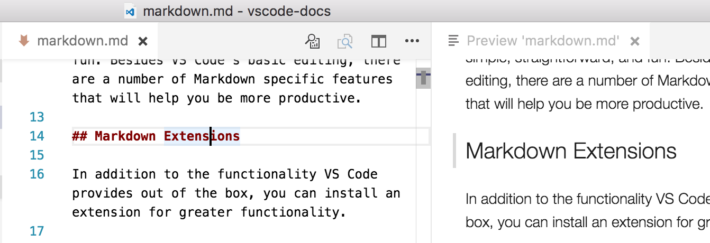

Markdown and VS Code
Working with Markdown files in Visual Studio Code is simple, straightforward, and fun. Besides VS Code's basic editing, there are a number of Markdown specific features that will help you be more productive.
Markdown Extensions
In addition to the functionality VS Code provides out of the box, you can install an extension for greater functionality.
Tip: Click on an extension tile above to read the description and reviews to decide which extension is best for you. See more in the Marketplace.
Markdown Preview
VS Code supports Markdown files out of the box. You just start
writing Markdown text, save the file with the .md extension
and then you can toggle the visualization of the editor
between the code and the preview of the Markdown file;
obviously, you can also open an existing Markdown file and
start working with it. To switch between views, press
kb(markdown.showPreview) in the editor. You can
view the preview side-by-side
(kb(markdown.showPreviewToSide)) with the file
you are editing and see changes reflected in real-time as you
edit.
Here is an example with a very simple file.

Tip: You can also right-click on the editor Tab and select Open Preview or use the Command Palette (
kb(workbench.action.showCommands)) Markdown: Open Preview and Markdown: Open Preview to the Side commands.
Editor and Preview Synchronization
When working with a Markdown preview to the side of your editor, VS Code can synchronize the view of the editor and the preview. By default, the Markdown preview will automatically scroll to reveal the element at the selected line in the editor.

This behavior can be disabled using the
markdown.preview.scrollPreviewWithEditorSelection
setting.
The currently selected line is indicated in the Markdown preview by a light gray bar in the left margin:

Also, when the Markdown preview is scrolled, the editor will scroll along with it:
This can be disabled using the
markdown.preview.scrollEditorWithPreview
setting.
Additionally, double clicking an element in the Markdown preview will automatically open the editor for the file and scroll to the line nearest the clicked element.
Using your own CSS
By default, we use a CSS style for the preview that matches
the style of VS Code. If you want to use your own CSS for the
Markdown preview, update the
"markdown.styles": []
setting
with the comma-separated list of URL(s) for your style
sheet(s).
For instance, in the screen shot above we used a custom CSS that changes the default font for the page and changes the color for the H1 title.
Here is the relevant CSS:
body {
font-family: 'Segoe UI', Tahoma, Geneva, Verdana, sans-serif;
}
h1 {
color: cornflowerblue;
}
Use File >
Preferences > Settings to
bring up the workspace settings.json file and
make this update:
// Place your settings in this file to overwrite default and user settings.
{
"markdown.styles": [
"Style.css"
]
}
Markdown preview security
For security reasons, VS Code restricts the content displayed
in the Markdown preview. This includes disabling script
execution and only allowing resources to be loaded over
https.
When the Markdown preview blocks content on a page, an alert popup is shown in the top right corner of the preview window:
You can change what content is allowed in the Markdown preview by clicking on this popup or running the Markdown: Change preview security settings command in any Markdown file:
The Markdown preview security settings apply to all files in the workspace.
Here are the details about each of these security levels:
Strict
This is the default setting. Only loads trusted content and
disables script execution. Blocks http images and
all SVG images not from one of our
trusted badge providers.
It is strongly recommended that you keep
Strict security enabled unless you have a very
good reason to change it AND you trust all markdown files in
the workspace.
Allow insecure content
Keeps scripts disabled but allows content to be loaded over
http. Also enables SVG images.
Disable
Disables additional security in the preview window. This
allows script execution and also allows content to be loaded
over http.
Snippets for Markdown
There are several built-in Markdown snippets included in VS
Code - press
kb(editor.action.triggerSuggest) (Trigger
Suggest) and you get a context specific list of suggestions.
Tip: You can add in your own User Defined Snippets for Markdown. Take a look at User Defined Snippets to find out how.
Compiling Markdown into HTML
VS Code integrates with Markdown compilers through the
integrated
task runner. We can use this to compile .md files into
.html files. Let's walk through compiling a
simple Markdown document.
Step 1: Install a Markdown compiler
For this walkthrough, we use the popular Node.js module, markdown-it.
npm install -g markdown-it
Note: There are many Markdown compilers to choose from beyond markdown-it. Pick the one that best suits your needs and environment.
Step 2: Create a simple MD file
Open VS Code on an empty folder and create a
sample.md file.
Note: You can open a folder with VS Code by either selecting the folder with File > Open Folder... or navigating to the folder and typing 'code .' at the command line.
Place the following source code in that file:
# Hello Markdown in VS Code!
This is a simple introduction to compiling Markdown in VS Code.
Things you'll need:
* [node](https://nodejs.org)
* [markdown-it](https://www.npmjs.com/package/markdown-it)
* [tasks.json](/docs/editor/tasks.md)
## Section Title
> This block quote is here for your information.
Step 3: Create tasks.json
The next step is to set up the task configuration file
tasks.json. To do this, open the
Command Palette with
kb(workbench.action.showCommands) and type in
Configure Task Runner, press
kbstyle(Enter) to select it.
VS Code then presents a list of possible
tasks.json templates to choose from. Select
Others since we want to run an external command.
This generates a tasks.json file in your
workspace .vscode folder with the following
content:
{
// See https://go.microsoft.com/fwlink/?LinkId=733558
// for the documentation about the tasks.json format
"version": "2.0.0",
"tasks": [
{
"taskName": "echo",
"type": "shell",
"command": "echo Hello"
}
]
}
To use markdown-it to compile the Markdown file, change the contents as follows:
{
// See https://go.microsoft.com/fwlink/?LinkId=733558
// for the documentation about the tasks.json format
"version": "2.0.0",
"tasks": [
{
"taskName": "Compile Markdown",
"type": "shell",
"command": "markdown-it sample.md -o sample.html",
"group": "build"
}
]
}
Tip: While the sample is there to help with common configuration settings, IntelliSense is available for the
tasks.jsonfile as well to help you along. Usekb(editor.action.triggerSuggest)to see the available settings.
Step 4: Run the Build Task
Since in more complex environments there can be more than one
build task we prompt you to pick the task to execute after
pressing
kb(workbench.action.tasks.build) (Run Build Task). In addition we allow you to scan the output for compile
problems. Since we only want to convert the Markdown file to
HTML select Never scan the build output from
the presented list.
At this point, you should see an additional file show up in
the file list sample.html.
If you want to make the Compile Markdown task
the default build task to run execute
Configure Default Build Task from the global
Tasks menu and select
Compile Markdown from the presented list. The
final tasks.json file will then look like this:
{
// See https://go.microsoft.com/fwlink/?LinkId=733558
// for the documentation about the tasks.json format
"version": "2.0.0",
"tasks": [
{
"taskName": "Compile Markdown",
"type": "shell",
"command": "markdown-it sample.md -o sample.html",
"problemMatcher": [],
"group": {
"kind": "build",
"isDefault": true
}
}
]
}
Automating Markdown compilation
Let's take things a little further and automate Markdown compilation with VS Code. We can do so with the same task runner integration as before, but with a few modifications.
Step 1: Install Gulp and some plug-ins
We use Gulp to create a task that automates Markdown compilation. We also use the gulp-markdown plug-in to make things a little easier.
We need to install gulp both globally (-g switch)
and locally:
npm install -g gulp
npm install gulp gulp-markdown-it
Note: gulp-markdown-it is a Gulp plug-in for the markdown-it module we were using before. There are many other Gulp Markdown plug-ins you can use, as well as plug-ins for Grunt.
You can test that your gulp installation was successful but
typing gulp -v. You should see a version
displayed for both the global (CLI) and local installations.
Step 2: Create a simple Gulp task
Open VS Code on the same folder from before (contains
sample.md and tasks.json under the
.vscode folder), and create
gulpfile.js at the root.
Place the following source code in that file:
var gulp = require('gulp');
var markdown = require('gulp-markdown-it');
gulp.task('markdown', function() {
return gulp.src('**/*.md')
.pipe(markdown())
.pipe(gulp.dest(function(f) {
return f.base;
}));
});
gulp.task('default', ['markdown'], function() {
gulp.watch('**/*.md', ['markdown']);
});
What is happening here?
- We are watching for changes to any Markdown file in our workspace, i.e. the current folder open in VS Code.
-
We take the set of Markdown files that have changed, and run
them through our Markdown compiler, i.e.
gulp-markdown-it. - We now have a set of HTML files, each named respectively after their original Markdown file. We then put these files in the same directory.
Step 3: Run the gulp default Task
To complete the tasks integration with VS Code, we will need
to modify the task configuration from before to run the
default Gulp task we just created. You can either delete the
tasks.json file or empty it only keeping the
"version": "2.0.0" property. Now execute
Run Task from the global
Tasks menu. Observe that you are presented
with a picker listing the tasks defined in the gulp file.
Select gulp: default to start the task. We
allow you to scan the output for compile problems. Since we
only want to convert the Markdown file to HTML select
Never scan the build output from the
presented list. At this point, if you create and/or modify
other Markdown files, you see the respective HTML files
generated and/or changes reflected on save. You can also
enable
Auto Save
to make things even more streamlined.
If you want to make the gulp: default task
the default build task executed when pressing
kb(workbench.action.tasks.build) run
Configure Default Build Task from the global
Tasks menu and select
gulp: default from the presented list. The
final tasks.json file will then look like this:
{
// See https://go.microsoft.com/fwlink/?LinkId=733558
// for the documentation about the tasks.json format
"version": "2.0.0",
"tasks": [
{
"type": "gulp",
"task": "default",
"problemMatcher": [],
"group": {
"kind": "build",
"isDefault": true
}
}
]
}
Step 4: Terminate the gulp default Task
The gulp: default task runs in the background and watches for file changes to Markdown files. If you want to stop the task, you can use the Terminate Running Task from the global Tasks menu.
Next Steps
Read on to find out about:
- CSS, Less and Sass - Want to edit your CSS? VS Code has great support for CSS, Less and Sass editing.
Common Questions
Q: Is there spell checking?
A: Not installed with VS Code but there are spell checking extensions. Check the VS Code Marketplace to look for useful extensions to help with your workflow.
Q: Does VS Code support GitHub Flavored Markdown?
A: No, VS Code targets the CommonMark Markdown specification using the markdown-it library. GitHub is moving toward the CommonMark specification which you can read about in this update.
Q: In the walkthrough above, I didn't find the Configure Task Runner command in the Command Palette?
A: You may have opened a file in VS Code rather than a folder. You can open a folder by either selecting the folder with File > Open Folder... or navigating to the folder and typing 'code .' at the command line.